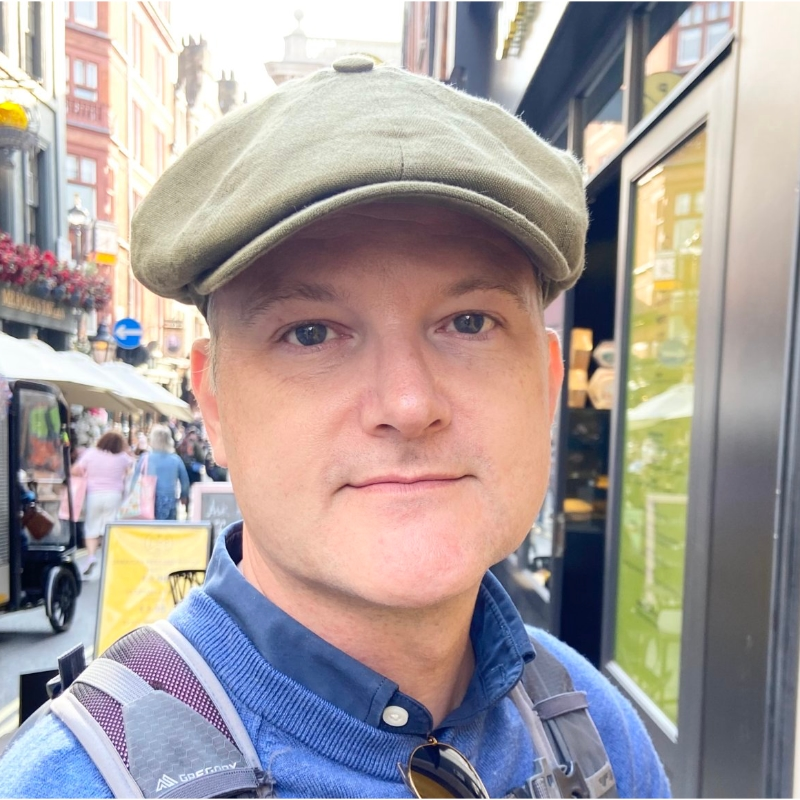

We're all guinea pigs. Trillions of dollars are subsidizing our growing dependence on tools the field has not yet stress-tested. We must embrace AI-native development — but do so with eyes wide open.

I have built software companies for three decades. I have shipped products. I have exited companies. I have done this work as a creative outlet and a profession. When others asked why I still wrote code as a technical founder, I told them as much. The work has been done from Louisville — with clients and collaborators across the US, Canada, the UK, and the EU.
In the last eighteen months, I stopped writing code.
Let me be clear about that. I am at the keyboard every day. But the act of typing — function by function, line by line — has moved elsewhere. The agents I orchestrate do that work now. I plan. I shape. I review. I steer. They write.
I love it. Today.
I have created, in effect, multiples of myself — agents that hold the parts of the work I used to hold alone. I now produce in a week what used to take me a quarter. I am enthusiastic to profit by this. And I would love to teach others how to step into it themselves.
A note, while we're here. I'm the father of three — two in college at UC Berkeley and Emory, and one finishing high school while concurrently enrolled at the Gatton Academy at Western Kentucky University. I think often about what their generation is walking into. The paid practice on this site is structured for companies — but I am not only for companies. If you're a student, a recent grad, or someone early-career trying to figure out what AI-native work means for you, schedule time with me. I keep room on the calendar for those conversations, no charge. Different terms, same care.
If I sell AI-native product ownership as a promise without sharing my own reservations, then I'm not telling the truth about the work. So here they are — the questions I cannot stop asking myself, in the open, where anyone considering this practice can see them.
Somewhere inside the asking, something occurred to me. My own daily work with AI agents is already creating a rich corpus for analysis — every conversation, every plan, every commit, every hour allocated, every dollar of token cost. The same instruments that make me productive also make me measurable. If I tracked those signals seriously over time — across my own practice first, and eventually across mentees who choose to participate — I could begin to see what is actually happening to cognition, judgment, time, and economics under AI-native work, instead of guessing at it.
That is the turn. Becoming Viable is what the mentorship can sell honestly today. Remaining Viable is the longer question — whether what works now keeps working, for me and for the people I bring into this practice, as the conditions underneath it shift. The second half of this site is the half that refuses to wait for the answer to arrive in hindsight. It did not exist until I realized the work itself could be observed.
The mentorship — Mentorship, Resources — is the half I'm enthusiastic about. The inquiry — Research, Data — is the half I'm concerned by. Both halves are honest. Neither half is complete without the other.
If I taught only the path forward, I would be a vendor. If I only studied the doubt, I would be useless to anyone trying to build a real business. The work, as I understand it now, is to do both — and to let anyone considering this practice see both before they choose.
No gatekeepers, no intake form.
You'll receive publication of new Resources, Research, Data, and Playbook editions.